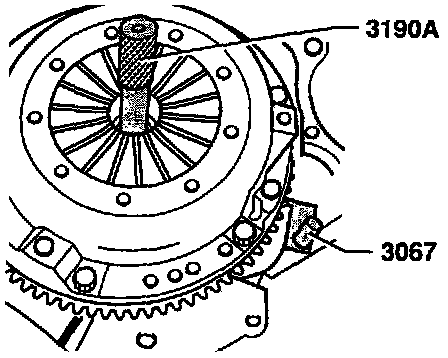
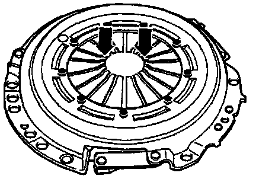
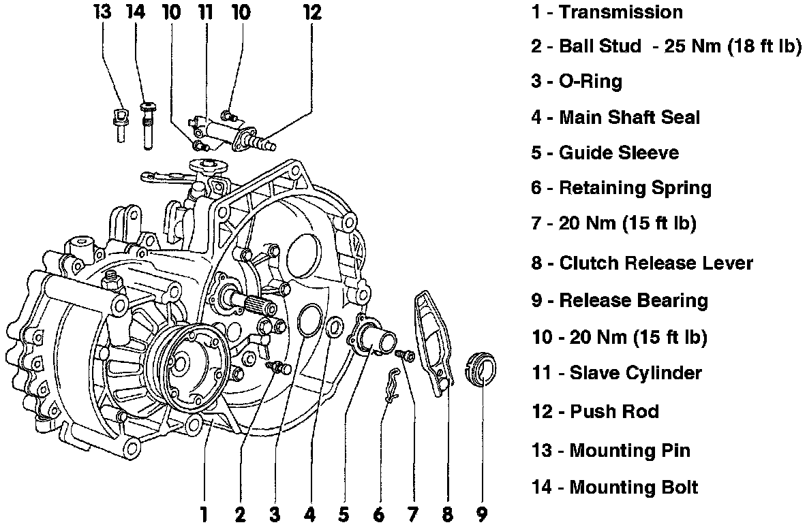

Clutch Replace
REMOVAL1. Remove transmission. Manual Transmission/Transaxle
Alignment Tool:

2. Install flywheel locking tool 3067 or equivalent, then loosen pressure plate attaching bolts diagonally in stages and remove bolts.
Pressure Plate:

3. Remove pressure plate and clutch disc and inspect. Wear up to half the thickness of the pressure plate diaphragm spring is permissible (arrows).
4. Remove flywheel and inspect. Resurface if necessary, or replace if found to be defective (cracks, below specification, etc.).
INSTALLATION
5. Install flywheel with new bolts which are coated with locking compound. Torque bolts diagonally to 60 Nm (45 ft lbs) + 90°.
NOTE:
- Before installing the clutch disc, remove corrosion from the input shaft splines and clutch disc hub splines, clean and apply a very thin coating of lithium grease or equivalent to the splines of the input shaft only.
- Place the clutch disc on the input shaft and make sure it moves back and forth freely. Remove excess grease.
- Always replace a clutch disc or pressure plate that has loose or damaged rivets.
Alignment Tool:
Clutch Assembly:

6. Install clutch disc with centering tool 3190A or equivalent, then install pressure plate and attaching bolts.
7. Tighten pressure plate bolts diagonally in stages. Torque to 20 Nm (15 ft lbs).
Transmission Assembly:

8. Replace the clutch release bearing, then install transmission. Manual Transmission/Transaxle
CAUTION:
- The contact surface of the pressure plate and the clutch disc must make complete contact with the flywheel.
- Always tighten mounting bolts evenly in a diagonal pattern to prevent damage to the centering holes in the pressure plate housing and the centering pins in the flywheel.
- When performing clutch repair procedures, always determine that you have the correct clutch pressure plate and clutch disc using the engine code letters.